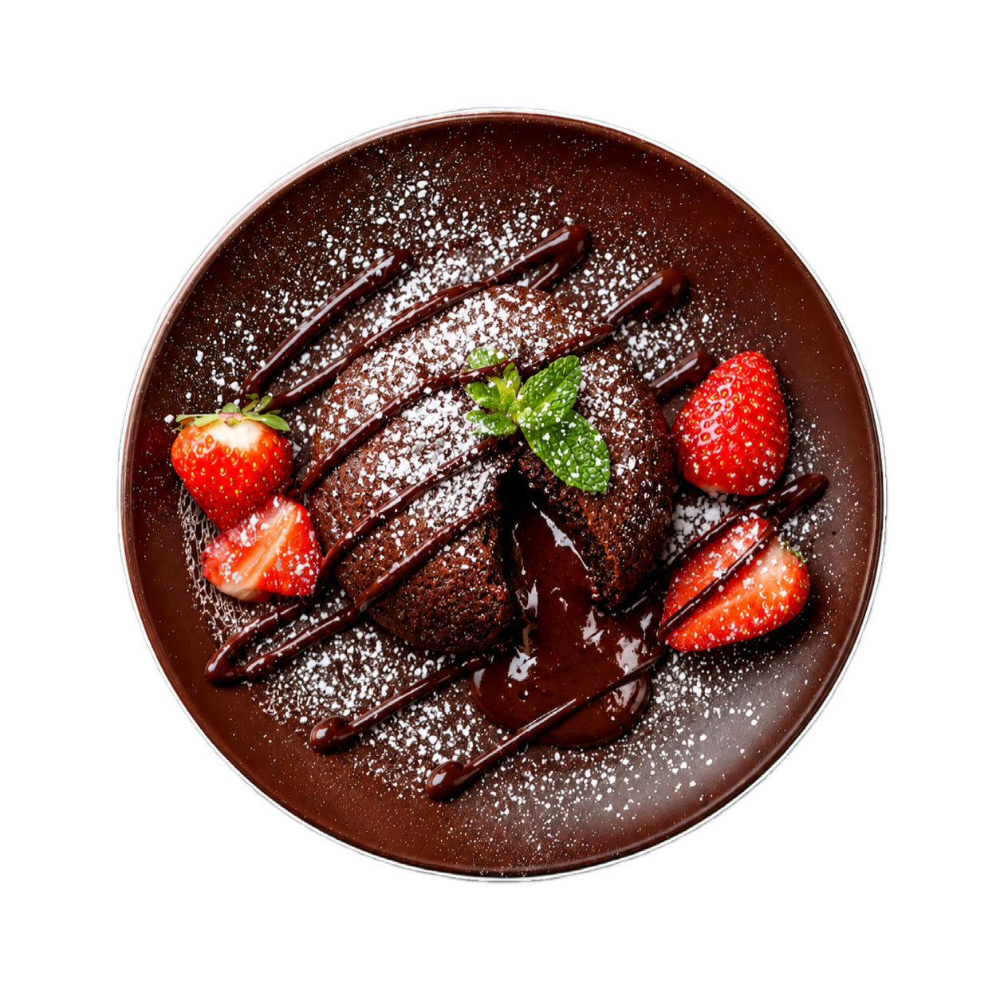

1/ Préchauffez le four à 160°C. Commencez par bien fouetter le
beurre. Ajoutez-y le sucre et fouettez bien jusqu’à obtenir
une consistance crémeuse.
2/ Ajoutez y 1 oeuf et fouettez. Ajoutez 1 cuillère à soupe de
farine et fouettez à nouveau.
3/ Ajoutez ensuite le deuxième oeuf et fouettez. Ajoutez la
deuxième cuillère de farine et fouettez. Ajoutez ensuite le
dernier oeuf et fouettez.
4/ Faites ensuite fondre le chocolat au micro-ondes (ou au
bain marie) et ajoutez-le à la préparation puis fouettez.
5/ Versez la préparation dans un moule chemisé de papier
sulfurisé. Enfournez pour 25 minutes à 160°C.

6/ À la sortie du four, laissez le fondant au chocolat
refroidir avant de le démouler et le couper.